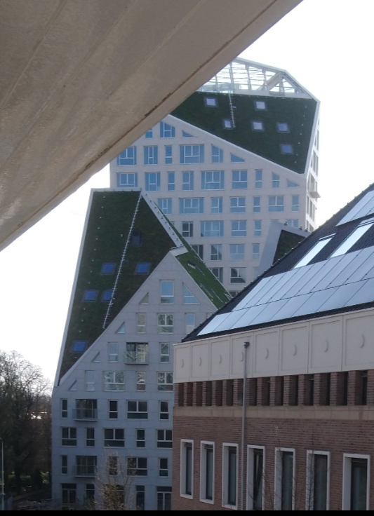
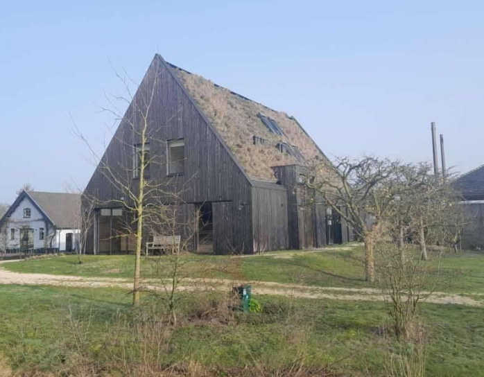
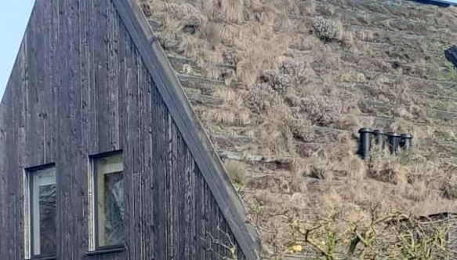

Wat betreft EnergieVerbruik hebben groene daken nauwelijks effect in de winter,
maar hebben groene daken wel een bewezen verkoelend effect in de zomer.
Standaard groene daken kunnen worden toegepast tot ongeveer 30? graden helling, maar tegenwoordig zijn er ook mogelijkheden tot wel 70 graden toe.
Eindhoven, ...., de 2 nieuwe gebouwen op de achtergrond met dakhellingen van meer dan 45 graden zijn helemaal groen. Deze daken liggen op de Noordzijde, de zuidzijde ligt vol met zonnepanelen.

Westbroek, dakhelling 60 graden, maar wel een hartstikke groen dak

